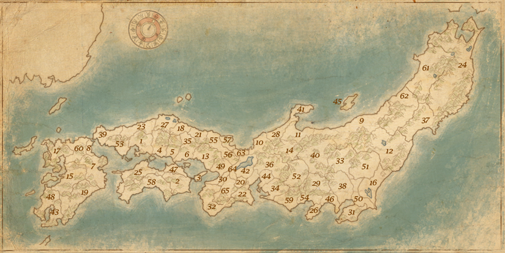

- Aki
- Awa
- Awaji
- Bingo
- Bitchu
- Bizen
- Bungo
- Buzen
- Echigo
- Echizen
- Etchu
- Fukushima
- Harima
- Hida
- Higo
- Hitachi
- Hizen
- Hoki
- Hyuga
- Iga
- Inaba
- Ise
- Iwami
- Iwate
- Iyo
- Izu
- Izumo
- Kaga
- Kai
- Kawachi
- Kazusa
- Kii
- Kozuke
- Mikawa
- Mimasaka
- Mino
- Miyagi
- Musashi
- Nagato
- North Shinano
- Noto
- Omi
- Osumi
- Owari
- Sado
- Sagami
- Sanuki
- Satsuma
- Settsu
- Shimosa
- Shimotsuke
- South Shinano
- Suo
- Suruga
- Tajima
- Tamba
- Tango
- Tosa
- Totomi
- Tsukushi
- Ugo
- Uzen
- Wakasa
- Kyoto
- Yamato